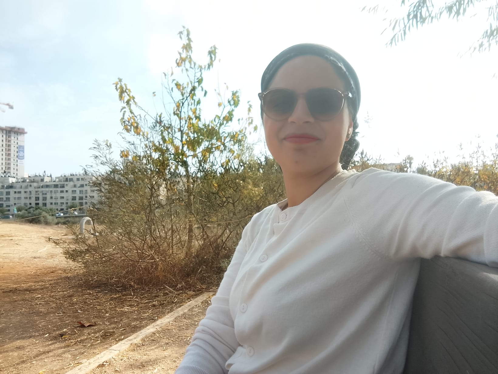

מרחב שקט שבו אני עוצרת לרגע בתוך הלימודים, הבית והילדים – ושומעת את הקול הפנימי.
האתר הזה נולד מהרצון לעצור רגע, לכתוב לעצמי, ולאסוף נקודות אור קטנות –
מחשבות, הודיה, התבוננות על הילדים ועל הדרך שלי. זה מקום שמאפשר לנשמה
לנשום לרגע, ולהזכיר לעצמי שאני בדרך, לא חייבת להיות מושלמת.

התבוננותנפש ושקט פנימיאימהות ולמידהנהרות, טבע ומסע אישי
מחשבות ליום־יום
"מותר לי להיות בדרך. גם אם היום לא היה מושלם – כל צעד קטן של מודעות הוא ניצחון של הנפש."
אני כותבת לעצמי נקודות קטנות שמזכירות לי לעצור ולהתבונן:
איך הרגשתי היום? איפה הצלחתי לבחור בסבלנות? מתי הצלחתי לנשום במקום להגיב מהר?
לעצור לכוס מים בשקט ולנשום עמוק שלוש נשימות.
לכתוב שלושה דברים טובים שקרו היום, גם אם הם קטנים מאוד.
להיזכר ברגע אחד יפה מהטבע – נהר, עץ, שמיים או ענן מיוחד.
להגיד לעצמי מילה טובה, כמו שהייתי אומרת לחברה טובה.
פינת תודה
לא תמיד היום מרגיש קל. אבל דווקא שם, בתוך העייפות והבלגן,
אני מנסה למצוא כמה נקודות קטנות של תודה – כדי לחזק את הלב.
תודה על הנשימה, על האפשרות לפתוח דף חדש בכל בוקר.
תודה על הילדים ועל החיוך שלהם, גם כשהם מאתגרים.
תודה על האפשרות ללמוד, להתקדם ולהסתכל קדימה בתקווה.
תודה על רגעי שקט קטנים – נסיעה באוטובוס, קפה לבד, נוף מהחלון.